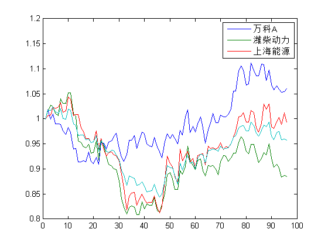
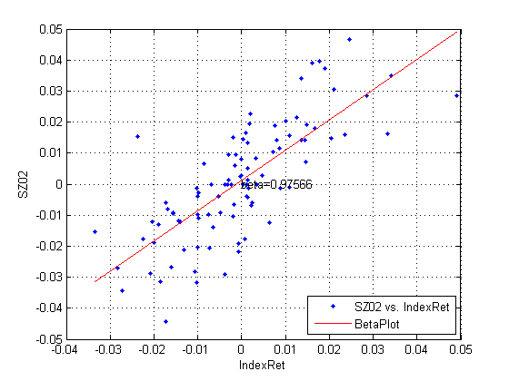
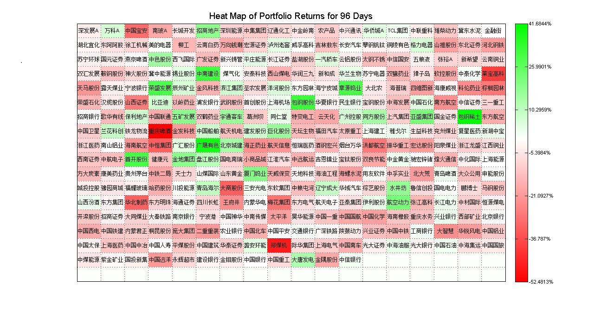

计算投资组合风险价值（VaR)
本程序使用三种不同的方法计算投资组合风险价值 具体方法为：
- 历史模拟
- 参数模型
- 蒙特卡罗模拟
Contents
Import data from Excel
%从Excel中读取数据 %文件CSI300.xlsx，中有三个表，分别为沪深300指数成分股价格序列， %沪深300指数成分股权重（股数）、沪深300指数价格。 % [num,txt]=xlsread('CSI300.xlsx','CSI300'); % CSI300Dates=txt(4:end,1);%时间 % CSI300Tickers=txt(2,2:end);%股票名称 % CSI300HistPrices=num;%成分股历史价格 % [num,txt]=xlsread('CSI300.xlsx','Portfolio Positions'); % positionsPortfolio=num;%positionsPortfolio 股票数量 % [num,txt]=xlsread('CSI300.xlsx','CSI300-Index'); % pricesIndex=num;%指数价格 % save CSI300Prices CSI300Dates CSI300Tickers CSI300HistPrices positionsPortfolio pricesIndex
Convert price series to return series and visualize historical returns
将数据转为收益率序列并画出历史收益曲线 如果数据已储存（非第一次运行）
clear variables load('CSI300Prices.mat')
Visualize price series
可视化价格序列 标准化价格，初始价格为1.00
normPrices = ret2tick(tick2ret(CSI300HistPrices)); % 绘制选定股票的标准化价格，'万科A'，'潍柴动力'，'上海能源' %选定股票 mypick = strcmpi(CSI300Tickers, '万科A') | strcmpi(CSI300Tickers, '潍柴动力') ... | strcmpi(CSI300Tickers, '上海能源'); %选定股票价格序列 mypickStockPrices = CSI300HistPrices(:, mypick); %选定股票的标准价格 mypickNormPrices = normPrices(:, mypick); %选定股票的名称 mypickCSI300Tickers = CSI300Tickers(mypick); %绘制图形 plot(mypickNormPrices,'DisplayName','mypickNormPrices','YDataSource','mypickNormPrices');figure(gcf) legend(mypickCSI300Tickers) normIndexPrice = ret2tick(tick2ret(pricesIndex));%指数标准价格 hold all plot(normIndexPrice,'DisplayName','Index','YDataSource','normIndexPrice');figure(gcf)
Simple data analysis, mean, std, correlation, beta
%样本股票价格分析，均值、标准差、相关性与beta %价格转收益率 mypickRet = tick2ret(mypickStockPrices, [], 'Continuous'); mean(mypickRet)%均值 std(mypickRet)%标准差 maxdrawdown(mypickStockPrices) %最大回撤 corrcoef(mypickRet)% 相关性 % 简单Beta计算 IndexRet = tick2ret(pricesIndex);%指数收益率 SZ02 = tick2ret(mypickStockPrices(:,1));%选中股票价格转为收益率 % 自动生成图片(cftool) [fitresult, gof] = createFit(IndexRet, SZ02)
ans =
0.0006 -0.0013 -0.0001
ans =
0.0185 0.0194 0.0214
ans =
0.1063 0.2317 0.2219
ans =
1.0000 0.7046 0.6492
0.7046 1.0000 0.7420
0.6492 0.7420 1.0000
fitresult =
Linear model Poly1:
fitresult(x) = p1*x + p2
Coefficients (with 95% confidence bounds):
p1 = 0.9757 (0.8063, 1.145)
p2 = 0.00113 (-0.001312, 0.003571)
gof =
sse: 0.0134
rsquare: 0.5847
dfe: 93
adjrsquare: 0.5802
rmse: 0.0120
 Calculate return from price series
%计算价格序列的收益率 %成分股历史收益率 'Continuous'指数形式 returnsSecurity = tick2ret(CSI300HistPrices,[],'Continuous'); %累计收益率 totalReturns = sum(returnsSecurity); numDays = size(CSI300HistPrices, 1); % 绘制股票热感图（二维） %For more information edit the M-file "makeHeatmap.m" makeHeatmap(totalReturns(end, :), CSI300Tickers, numDays, 'returns', 'matlab'); % [EOF]